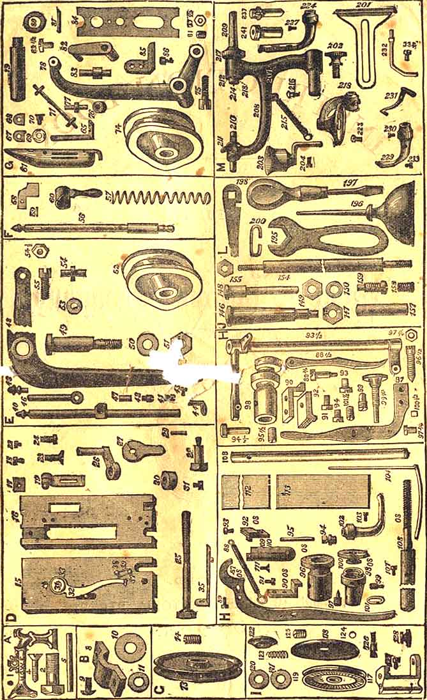
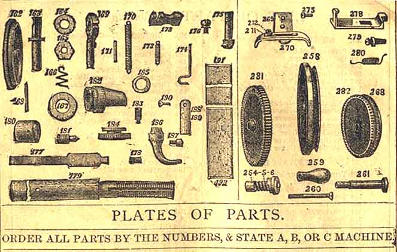

SECTION A1 Arm -- A, B, C.2 Arm Screw3 Arm Plate -- A, B, C.4 Arm Plate Screw5 Arm Spool Pin6 Bed (Step Feed) -- A, B, C.7 Bed (Wheel Feed) -- A, B, C.SECTION B8 Shaft Cap9 Shaft Cap Screw10 Bed Plate Washer (5/8 by 3/4)11 Bed Plate Washer (3/8 by 1/2)SECTION C12 Pulley -- A, B, or C.14 Pulley Screw -- A, B, or C.SECTION D15 & 16 Outside and Inside Face Plate -- A, B, or C.17 Presser Bar Guide Adjuster18 Presser Bar Guide Adjuster Screw19 Thread Controller -- Complete20 Thread Controller Plate21 Thread Controller Bridge22 Thread Controller Screw23 Inside Face Plate Screw24 Outside Face Plate Screw25 Presser Screw26 Presser Slide27 Adjusting Cam28 Adjusting Cam Screw29 Dowel Pin30 Presser Screw Boss31 Presser Screw Boss Screw31 1/2 Take Up -- Complete32 Take Up33 Take Up Spring34 Take Up Spring Screw35 Take Up Adjuster36 Take Up Adjuster Pin37 Thread Guide Pin38 Thread Guide Pin -- (Drilled)39 Thread Guide Pin WireSECTION E40 Needle Bar -- A, or C.41 Needle Bar Set Screw42 Needle Bar Thread Shield43 Needle Bar Thread Guide -- Upper44 Needle Bar Thread Guide -- Lower45 Needle Bar Thread Guide Screw46 Needle Bar Piston47 Needle Bar Piston Pin48 Needle Lever -- A, B, C, D.49 Needle Lever Stud -- A, B, C, D.50 Needle Lever Stud Washer51 Needle Lever Stud Nut52 Needle Cam -- A, B, C, D.54 1/2 Shuttle Lever -- A, B, C, D.55 Needle Cam ScrewSECTION F56 Presser Bar -- A, or C.57 Presser Bar Spring58 Presser Bar Guide59 Presser Bar Guide Pin60 Presser Bar LifterSECTION G61 Shuttle -- A, or C. -- Complete62 Shuttle Shell63 Shuttle Tip64 Shuttle Butt65 Shuttle Latch66 Shuttle Latch Rivet67 Shuttle Tension Plate -- Upper68 Shuttle Tension Plate -- Lower69 Shuttle Tension Spring70 Shuttle Tension Screw71 Bobbin -- A, B, or C.72 Bobbin Wire73 Bobbin Head74 Shuttle Cam -- A, B, or C.75 Shuttle Cam Screw76 & 77 Shuttle Cam Roll & Stud A, or C.78 Shuttle Lever -- A, B, or C.79 Shuttle Lever Stud -- A, or C.80 Shuttle Lever Stud Collar81 Shuttle Lever Stud Screw82 Shuttle Driver Link -- A, or C.83 Shuttle Driver Stud -- (Drilled)83 1/2 Shuttle Driver Stud Screw84 Shuttle Driver Slide85 Shuttle Driver86 Shuttle Driver ScrewSECTION H87 Feed Lever -- New or Old Style88 Feed Lever Spring -- New or Old Style88 1/2 Swing Lever88 3/4 Swing Lever Screw89 Feed Lever Spring Pin90 Feed Lever Rider -- New or Old Style91 Feed Lever Rider Screw -- New Style92 Feed Surface -- New or Old Style93 Feed Surface Screw -- New or Old Style93 1/2 Feed Rocker94 Feed Rocker Screw94 1/2 Feed Rocker Piston95 Feed Lever Pin95 1/2 Feed Rocker Piston Screw96 Lift Cam96 1/2 Feed Rocker Centre Screw97 Lift Cam Screw97 1/2 Feed Rocker Centre Nut97 3/4 Feed Lever Rider Screw98 Feed Cam -- New or Old Style99 Feed Cam Screw -- New or Old Style100 Feed Cam Nut100 1/2 Stitch Brake101 Feed Cam Nut Spring101 1/2 Stitch Brake Screw102 Presser Foot103 Presser Foot Screw104 Quilting Gauge105 Quilting Gauge Bar106 Quilting Gauge Plate107 Quilting Gauge Screw108 Shaft -- A -- New or Old Style108 Shaft -- B, or C109 Throat Plate -- Large Hole -- A, or C110 Throat Plate -- Small Hole -- A, or C111 Throat Plate Screw112 Shuttle Race Cover -- Back -- A, or C113 Shutle Race Cover -- Front -- A, or C114 Shuttle Race Cover Rivet115 Shuttle Race Cover PadSECTION I116 Tension -- Complete117 Tension Stand118 Tension Back Plate119 Tension Wheel120 Tension Washer -- Back121 Tension Washer -- Front122 Tension Nut Washer123 Tension Check Spring124 Tension Check Spring Washer125 Tension Check Spring Screw |
SECTION I (Continued)126 Tension Check Spring Screw Stud127 Tension Set Screw128 Tension Thumb NutSECTION J129 Table Top130 Drawer131 Drawer Slide, or Bolt132 Drawer Slide Screw134 Right Leg135 Left Leg136 Leg Screw137 Leg Brace142 Leg Brace Screw, No. 12, 1/2 inch143 Leg Brace Screw, No. 20, 5/8 inch144 Driving Wheel146 Driving Wheel Stud147 Driving Wheel Stud Nut148 Crank Pin149 Crank Pin Nut150 Crank Pin Washer151 Wheel Guard152 Wheel Guard Screw153 Pitman154 Treadle Rod -- A, B, or C155 Treadle Rod Nut156 Treadle156 1/2 Treadle Cone157 Treadle Pin158 Treadle Pin Screw159 Treadle Screw159 1/2 Treadle Cone Screw160 Dripper -- A, B, or C161 Dripper ScrewSECTION KWHEEL FEED PARTS162 Feed Wheel163 Feed Wheel Stud164 Feed Wheel Stud Washer165 Feed Wheel Nut166 Feed Wheel Stud Spring167 Feed Clutch Lever Washer168 Feed Stud Pin169 Feed Clutch Lever170 Feed Clutch Lever Spring171 Feed Clutch Lever Spring Pin172 Feed Clutch173 Feed Clutch Spring174 Feed Clutch Spring Hook175 Feed Rider176 Feed Rider Screw177 Feed Brake178 Feed Brake Screw179 Shaft -- A, B, or C180 Shaft Collar181 Feed Cam182 Feed Cam Screw184 Feed Cam Nut185 Feed Cam Nut Spring186 Presser Foot187 Presser Foot Screw188 Throat Plate -- Large Hole189 -- Throat Plate -- Small Hole190 Throat Plate Screw191 Shuttle Race Cover -- Back192 Shuttle Race Cover -- Front193 Shuttle Race Cover Rivet194 Shuttle Race Cover PadSECTION L195 Wrench196 Oil Can197 Screw Driver198 Shuttle Screw Driver199 Belt200 Belt HookSECTION M201 Gauge202 Gauge Screw203 Oil Cup204 Oil Cup Set Screw205 Spooler -- Complete208 Spooler Frame209 Spooler Spindle210 Spooler Step211 Spooler Thumb Screw212 Spooler Spindle Washer213 Spooler Spindle Washer Pin214 Spooler Spindle Driving Pin215 Spooler Spring216 Spooler Spring Pin217 Rubber Ring218 Roll Presser219 Roll Presser Arm220 Roll Presser Arm Stud221 Roll Presser Stud Nut222 Roll Presser Wheel223 Roll Presser Set Screw224 Foot Hemmer - Nos 1, 2, or 3225 Bed Plate Hemmer226 Hemmer Tongue227 Hemmer Set Screw228 Braider -- Complete229 Braider Foot230 Braider Foot Screw231 Braider Spring232 Braider Spool Pin233 Braider Spring Screw234 Braider Spool Pin Screw235 Spool Pin Stop235 1/2 Corder -- Complete237 Bed Hinge238 Bed Hinge Rivet239 Bed Hinge Stud240 Bed Hinge Stud Pin241 Bed Hinge Stud RubberCABINET FIXTURES246 Treadle Bracket249 Wheel Guard255 HangerHAND MACHINE258 Hand Wheel259 Handle260 Handle Stud261 Hand Wheel Stud262 Hand Wheel Stud Screw264 Eccentric Nut Pin265 Eccentric Nut Spring266 Eccentric Nut268 Pulley269 Shuttle Carrier270 Shuttle Carrier Spring271 Shuttle Carrier Spring Washer272 Shuttle Carrier Spring Screw273 Shuttle Carrier Screw275 Shuttle Race -- Old Style276 Shuttle Race Screw278 Bed Plate Latch279 Bed Plate Latch Screw280 Bed Plate Latch Spring281 Large Geared Wheel282 Small Geared Wheel |
To Place the Machine on the Table ---- Page 6
To Oil the Machine ----- 7
To Work the Treadle ---- 8
To Wind the Bobbin ---- 9
To Thread the Shuttle ---- 10 & 11
To Thread the Machine ---- 12
To Oil the Tension ---- 13
To Place the Shuttle in the Machine ---- 14
To Draw up the Lower Thread ---- 15
To Regulate the Length of Stitch ---- 15
To Change and Set the Needle ---- 16
Missing Stitches ---- 17
To Regulate the Tensions ---- 18
Commencing to Sew ---- 19
To Remove the Work from the Machine ---- 20
To take off the Presser Foot ---- 21
To adjust and work with the Narrow Hemmer ---- 22 & 23
To make a Fell ---- 24
To Braid ---- 25
To Quilt ---- 26
The wide Bed Plate Hemmer ---- 27
Instructions for Hand Machine ---- 28 & 29
Instructions for Wheel-feed Machine ---- 30 & 31
Remarks on Needles and Thread ---- 32
A LITTLE time given to the study of the instructions, before commencing to use the machine, will be found of great advantage.
The working of the machine is explained as minutely as possible, and each operation made the subject of illustration. The cute are arranged in the order in which the learner must proceed.
A careful examination of the illustrations alone will be sufficient to teach the most inexperienced to operate successfully.
Never attempt to take the machine apart, or you will be sure to bet into trouble.
Become perfectly familiar with the machine before undertaking any practical work.
If the Machine miss stitches, see that the needle is properly set, and that the thread and needle are of the proper size to be used together.
If the thread breaks, be sure that the needle is not too high, and that the short groove is next to the shuttle, and that the machine is threaded properly, and that the tensions are not too tight, and that the eye of the needle is not sharp.
When about to sew thick, soft material, adjust the machine for a longer stitch.